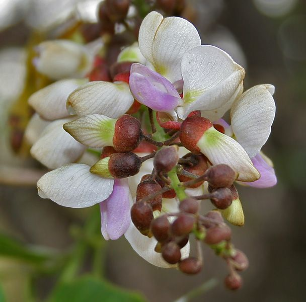

🌳 புங்கை – உங்களுக்குத் தெரியுமா?
1கோடையில் துளிர்க்கும் நிழல் மரம்
கடும் கோடையில்தான் புதிய தளிர்கள் விட்டு அடர்ந்த குளிர் நிழல் தருவதால், சாலையோரங்களிலும் கோயில்களிலும் விரும்பி நடப்படுகிறது.
2எதிர்கால எரிபொருள்
புங்கம் விதை எண்ணெய் பண்டைய காலத்தில் விளக்கெரிக்கப் பயன்பட்டது. இன்று "பயோடீசல்" எரிபொருளாக ஆராயப்படுகிறது.
3மண்ணை வளமாக்கும் மரம்
பருப்பு இனத்தைச் சேர்ந்த இம்மரம் மண்ணில் நைட்ரஜனைச் சேர்க்கிறது. உதிரும் இலைகள் சிறந்த இயற்கை உரம்.
🌿 சித்த மருத்துவக் குறிப்பு:
புங்கம் எண்ணெயை வெளிப்பூச்சாகச் சொறி, சிரங்கு, கரப்பான் போன்ற தோல் நோய்களுக்குப் பயன்படுத்துவது சித்தர் மரபு. புங்கம் குச்சியால் பல் துலக்குவதும் பழைய வழக்கம். (எண்ணெய், விதைகளை உள்ளுக்குச் சாப்பிடக் கூடாது.)
இந்தத் தகவல் பயனுள்ளதாக இருந்ததா?